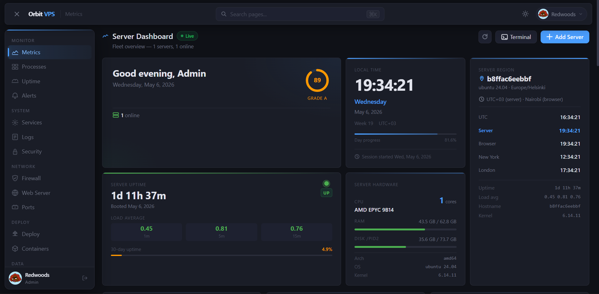
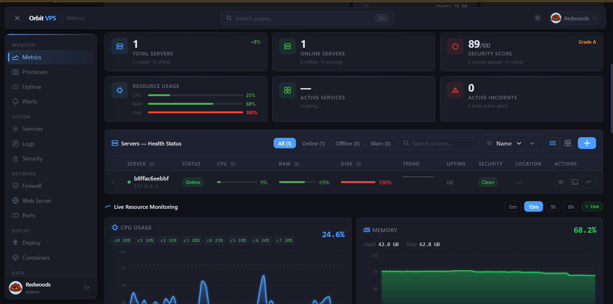
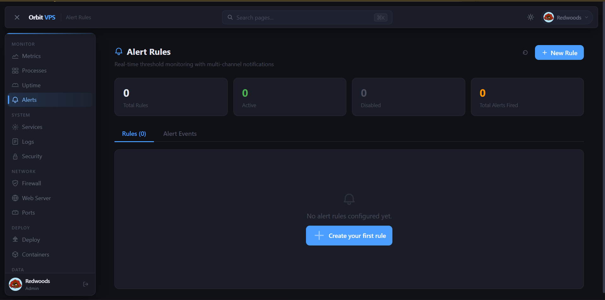
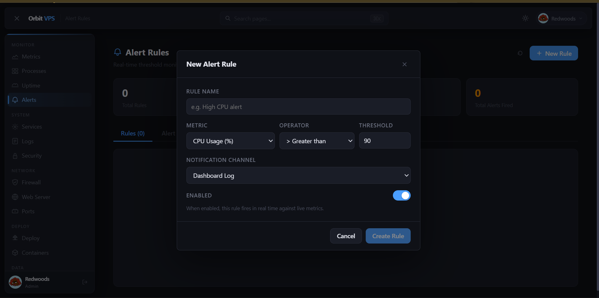
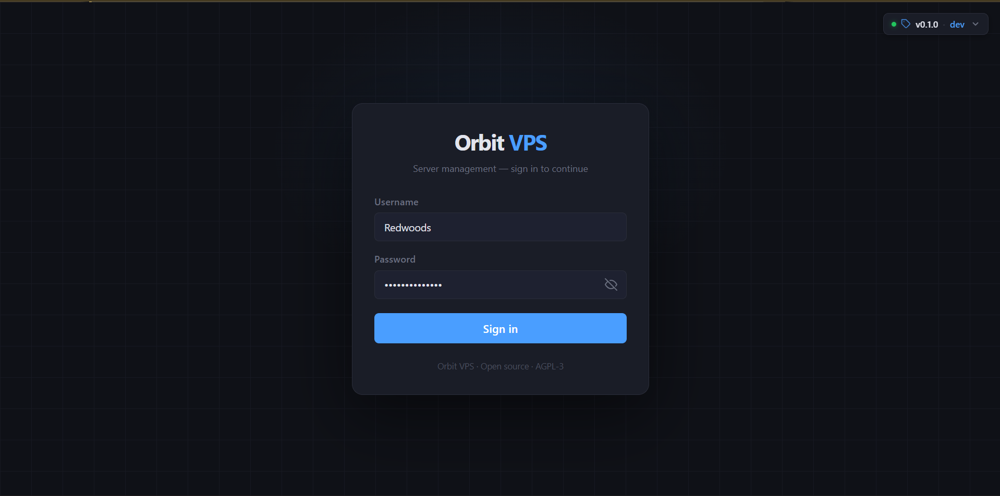

A single Go binary that turns any Linux server into a fully managed VPS — real-time metrics, GitOps deployments, firewall control, containers, and MCP support. Zero dependencies.
A full-featured server management dashboard, live in your browser.

Server Dashboard — live server health, uptime, grade score, and timezone overview

Fleet Overview — multi-server health status with live CPU, RAM, and disk charts

Alert Rules — real-time threshold monitoring with multi-channel notifications

Create Alert Rule — configure metric, operator, threshold, and notification channel

Secure Login — clean authentication with optional 2FA and session management
All modules ship in one binary. Enable or disable each independently via orbit.toml.
CPU, memory, disk, and network graphs streamed live over WebSocket. Per-process stats via /proc.
Integrated Wazuh, Suricata, CrowdSec, and Fail2ban management. Audit logs and RBAC built in.
Visual nftables/iptables management. Port-level rules with one-click apply and rollback.
Push-to-deploy pipelines from any Git provider. Webhook triggers, build logs, and rollbacks.
Full Docker lifecycle — pull, run, inspect, shell, logs — all from the browser.
Nginx/Apache vhost management, SSL certificates via Let's Encrypt, and live config editing.
HTTP and TCP monitors with incident timelines, status pages, and multi-channel alerting.
Model Context Protocol support — let AI assistants like Claude manage your server securely.
Manage a fleet of remote servers over SSH from a single Orbit instance.
SFTP-backed file browser with upload, download, edit, and permission management.
Real-time threshold monitoring across any metric. Fires to email, Slack, webhook, and more.
Trigger and monitor GitHub Actions workflows directly from the Orbit dashboard.
All methods default to port 5000. Every port must be in range 5000–6000.
# Installs binary, creates system user, writes config, enables systemd service curl -fsSL https://raw.githubusercontent.com/KenyanRedwoods01/Orbit/main/scripts/install.sh | sudo bash # With custom options sudo bash install.sh --port 5100 --version v1.2.0
git clone https://github.com/KenyanRedwoods01/Orbit.git cd Orbit sudo bash scripts/install.sh
# Clone and build — Docker image is built locally from source git clone https://github.com/KenyanRedwoods01/Orbit.git cd Orbit cp .env.example .env # set ORBIT_SECRET_KEY docker compose up -d # builds image then starts on port 5000 # Or run a manually built image docker build -t orbit . docker run -d --name orbit \ --cap-add NET_ADMIN --cap-add SYS_PTRACE \ -p 5000:5000 -v orbit-data:/var/lib/orbit \ orbit
Usage: install.sh [OPTIONS] --version, -v VERSION Release tag to install (default: latest) --port, -p PORT Main panel port [5000-6000] (default: 5000) --mcp-port PORT MCP TCP port [5000-6000] (default: 5001) --metrics-port PORT Metrics port [5000-6000] (default: 5002) --no-start Install without starting the service --uninstall Remove Orbit from this system --help, -h Show this help message
All Orbit services are confined to ports 5000–6000. The installer validates every assignment before proceeding.
| Port | Service | Protocol | Config key | Status |
|---|---|---|---|---|
| 5000 | Main panel (HTTPS) | TCP / WSS | listen_addr |
Default |
| 5001 | MCP TCP listener | TCP | [mcp] tcp_addr |
Optional |
| 5002 | Prometheus metrics | HTTP | [metrics] addr |
Optional |
| 5000–6000 | Custom user services | Any | — | Reserved range |
Orbit ships four production-ready workflows for testing, releasing, Docker publishing, and this documentation site.
Runs on every push and PR. Runs golangci-lint, Go tests with race detection, frontend build, and uploads a smoke-test binary artifact.
Triggered by a version tag (v*.*.*). Runs GoReleaser to build Linux binaries (amd64, arm64, armv7), creates .deb/.rpm packages, and publishes a multi-arch Docker image to GHCR.
Deploys the docs/ directory to GitHub Pages on every push to main. This is the site you're reading right now.
Weekly and on every main push: runs govulncheck for Go CVEs and CodeQL analysis for both Go and JavaScript source.
# Tag a release — triggers the release workflow automatically git tag v0.1.0 git push origin v0.1.0 # GoReleaser builds: # orbit_linux_amd64.tar.gz # orbit_linux_arm64.tar.gz # orbit_linux_armv7.tar.gz # orbit_0.1.0_amd64.deb # orbit_0.1.0_x86_64.rpm # ghcr.io/kenyanredwoods01/orbit:v0.1.0 # checksums.txt
Orbit reads /etc/orbit/orbit.toml by default. Pass a different path with --config.
# Main listen address — port must be in range 5000-6000 listen_addr = "0.0.0.0:5000" data_dir = "/var/lib/orbit" secret_key = "<auto-generated on first run>" [modules] metrics = true firewall = true deploy = true # ... all modules default to true [mcp] enabled = false socket_path = "/run/orbit/mcp.sock" # tcp_addr = "127.0.0.1:5001"
Everything you need to install, configure, and operate Orbit in production.
Step-by-step install for Ubuntu, Debian, CentOS, and Docker.
All orbit.toml keys, env vars, and CLI flags documented.
REST and WebSocket endpoints. OpenAPI spec at /api/openapi.json.
Connect Claude, GPT, or any MCP-compatible AI to your server.
CI/CD workflows, release automation, and Docker publishing.
Hardening checklist, capability model, Wazuh/Suricata setup.
Dev environment setup, conventions, and how to submit a PR.
Release notes and version history on GitHub Releases.